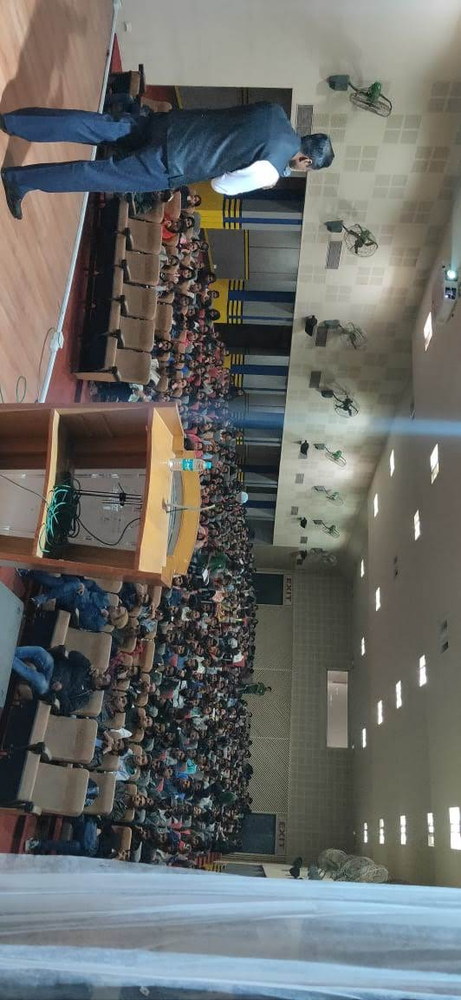
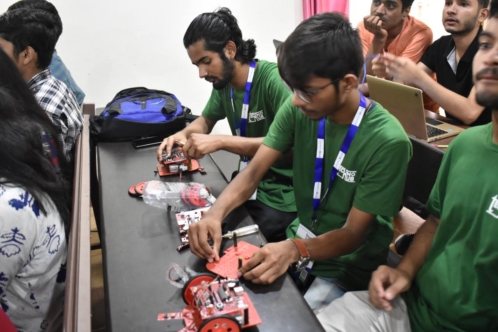
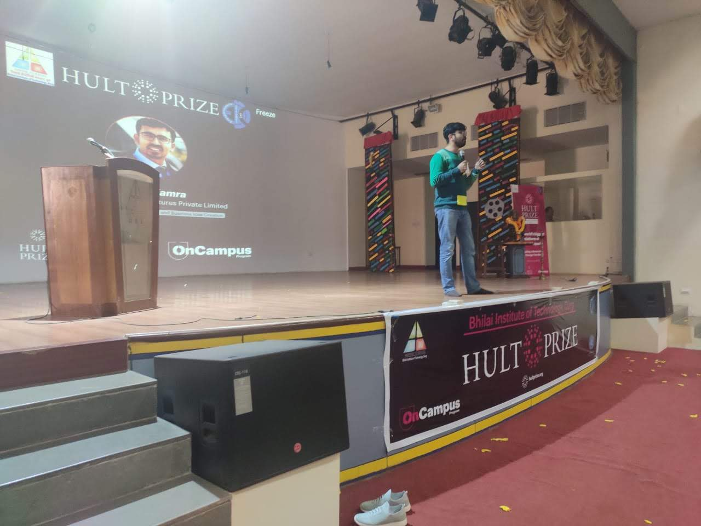
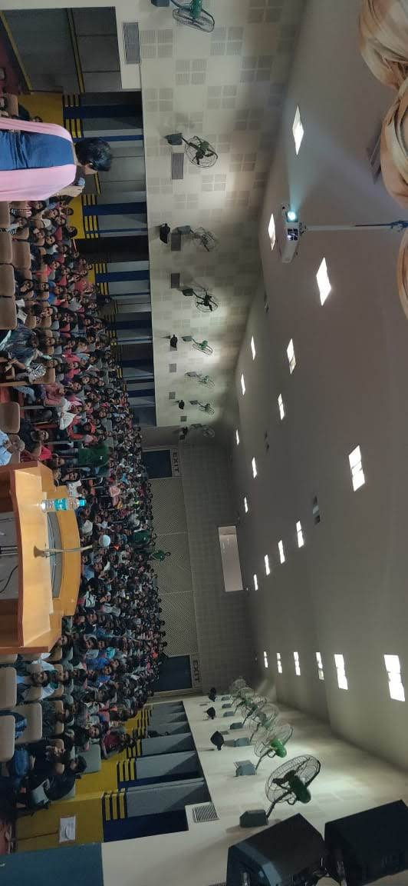
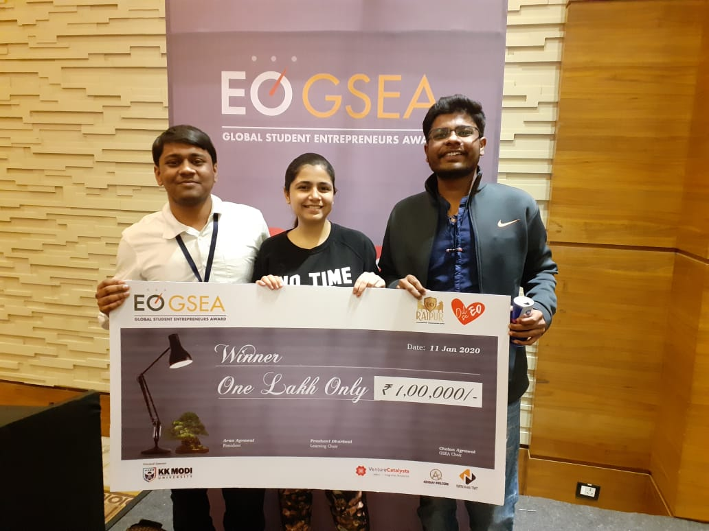
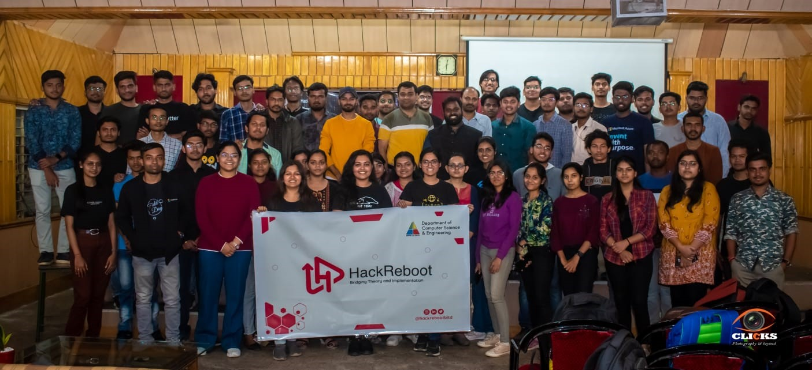

Bhilai Institute of Technology (BIT), Durg
Established: 1986
Location: Durg, Chhattisgarh
Type: Autonomous institute
Affiliation: Chhattisgarh Swami Vivekanand Technical University
(CSVTU)
Accreditations: NAAC and NBA Programs Offered: Undergraduate: BE in
fields like Computer Science, Mechanical, Civil, Electrical, etc.
Postgraduate: ME and MBA programs in various disciplines.
Doctoral: Research programs like Ph.D. and M.Phil.
Infrastructure: Central Library with extensive resources, including
e-books and journals. IDEA Lab for innovation and prototype development.
Well-equipped labs, modern classrooms, and research centers. Campus
Facilities: Sports complex with indoor and outdoor facilities.
Gymnasium, open-air theatre, coffee corner, Wi-Fi campus. Bank, ATM,
student store, and medical dispensary.
Achievements
1. Institutional Accolades: Recognized as one of the best autonomous
institutions in the region. Consistently ranked among top institutions
for engineering and management education.
2. Academic Excellence: Significant research output with published
papers in reputed journals. Faculty actively participate in national and
international conferences. Hosting and participation in events like
Smart India Hackathon.
3. Alumni Success: Alumni hold leadership roles globally in industries
like IT, manufacturing, and entrepreneurship. Active alumni network
providing mentorship and career guidance.
4. Innovative Initiatives: IDEA Lab promotes hands-on learning and
development of prototypes. Collaboration with industries and global
institutions for cutting-edge research.
5. Placements: Strong placement records with top recruiters from various
industries. Placement support for internships and final job offers.
Dr. Santosh Kumar Sar, a Professor and Coordinator in the Department of Applied Chemistry at Bhilai Institute of Technology (BIT), Durg, obtained his Ph.D. in Physical Organic Chemistry from Pt. Ravishankar Shukla University, Raipur, in 1995. He has also worked as a Post-Doctoral Research Fellow in Biomimetic Chemistry with Prof. Sung Soo Kim at Inha University, South Korea, under the Brain Korea-21 project sponsored by the USA. Throughout his career, Dr. Sar has been a visiting fellow at various institutions, including Chulalongkorn University, Thailand, and the Institute of Kimai, Malaysia. He has received numerous fellowships, including the Council of Science and Technology, Bhopal Research Fellowship from 1992 to 1995. His academic contributions span subjects like applied chemistry, environmental science, and water resource management at both undergraduate and graduate levels. Additionally, Dr. Sar teaches disaster management, air pollution, and environmental impact assessment in master's programs. Dr. Sar is actively involved in research in surface chemistry, environmental chemistry, medicinal plants, pyrolysis, and nanocomposites. He has supervised numerous Ph.D., M.Tech., and M.Phil. students from various prestigious universities. Dr. Sar has handled several national projects, including those funded by the All India Council for Technical Education (AICTE), Chhattisgarh Council of Science and Technology, and the Chhattisgarh Medicinal Plant Board. He is also engaged in the National Uranium Project under the Department of Atomic Energy, Government of India, to explore radioactive elements in Chhattisgarh. Over the course of his career, Dr. Sar has published more than 100 research papers and authored two books published by Lambert Academic Publishing, Germany. He holds several patents and serves on the editorial boards of national and international journals. Dr. Sar is a Fellow of various scientific societies, such as the Indian Surface Science & Technology Society and the Indian Chemical Society. He currently holds leadership positions as Dean of Chemical & Bio-Technology, Chairman of Environmental Science & Engineering at Chhattisgarh Swami Vivekananda Technical University, and Dean of Student Welfare at BIT Durg. He can be contacted via email at santoshsar@hotmail.com or by phone at 9425242582.
Dr. (Mrs.) Madhurima Pandey, a professor in the Department of Applied Chemistry at Bhilai Institute of Technology (BIT), Durg, has made significant contributions to the study of environmental pollution. She was part of the research group that first identified arsenic contamination in the village of Koudikasa, Chhattisgarh. Her primary research focus includes the study of surface and groundwater pollution, the mobility and speciation of pollutants, their removal, and their health impacts. She has also worked on modeling pollutants. Dr. Pandey has published 44 research papers in highly regarded international and national peer-reviewed scientific journals such as Current Science, Bioresource Technology, Environmental Geochemistry & Health, International Journal of Environmental Research and Public Health, Journal of Environmental Protection, Pollution Research, and Analytical Letters. Furthermore, she has presented her work at various scientific conferences. In addition to her research achievements, Dr. Pandey has guided 7 doctoral students and supervised 15 master's theses in Environmental Science and Engineering. She joined BIT Durg on February 9, 1994, and can be reached via email at madhurima.pandey@bitdurg.ac.in or by phone at 9425566238. Her academic credentials include an M.Sc. and a Ph.D., with research interests primarily revolving around the mobility and remediation techniques of metals in environmental matrices.
Dr. Ruby Das has made significant contributions to the field of Applied Physics over the course of her distinguished career. With her extensive experience and expertise in both theoretical and experimental aspects of physics, she has become a key figure in the academic and research community at BIT Durg. Her work in Theoretical Plasma Physics, particularly her studies on plasma instabilities, has helped to advance the understanding of plasma behavior in various environments. In addition, her research in Experimental Solid State Physics, focused on thin films and nanomaterials, has paved the way for innovative applications in electronics and materials science. Throughout her tenure, Dr. Das has published numerous papers in reputed journals, further establishing her as a respected authority in her areas of interest. As the Head of the Department of Applied Physics, she has played a pivotal role in shaping the academic curriculum and guiding students in their research endeavors. Her commitment to both teaching and research has earned her admiration from colleagues and students alike.
The Oath-Taking Ceremony at Bhilai Institute of Technology (BIT), Durg, is an important event that marks the formal induction of new student leaders, faculty members, and administrative officials. The ceremony typically involves the newly elected student representatives, such as the President and Secretary, taking an oath of responsibility and commitment to their roles. The event is attended by faculty, staff, and students, and often features a speech from the chief guest or head of the institution, emphasizing values like integrity, service, and leadership. The ceremony symbolizes dedication to the institution's goals and fosters a sense of unity and responsibility within the BIT Durg community.
Focus BIT Durg College is an educational institution located in Durg, Chhattisgarh. It offers various academic programs, with a focus on providing quality education in fields such as engineering, technology, and management. The college is known for its dedicated faculty, modern infrastructure, and a student-friendly learning environment. It aims to foster academic excellence, skill development, and overall growth of its students to prepare them for professional challenges in their respective fields. The college also emphasizes practical knowledge and industry exposure through various initiatives and collaborations.
     The Institute's annual cultural and sports fest,themed "High on Colours",was held in MArch 2024.It featured vibrant activities,including performances and competitons.
A major Technical fest managed by the students of BIT Durg.It highlights technological innovations amnd hosts several workshops,hackathons,and seminars.Past editions have featured reputed academics and industry profeessionals as chief guests.